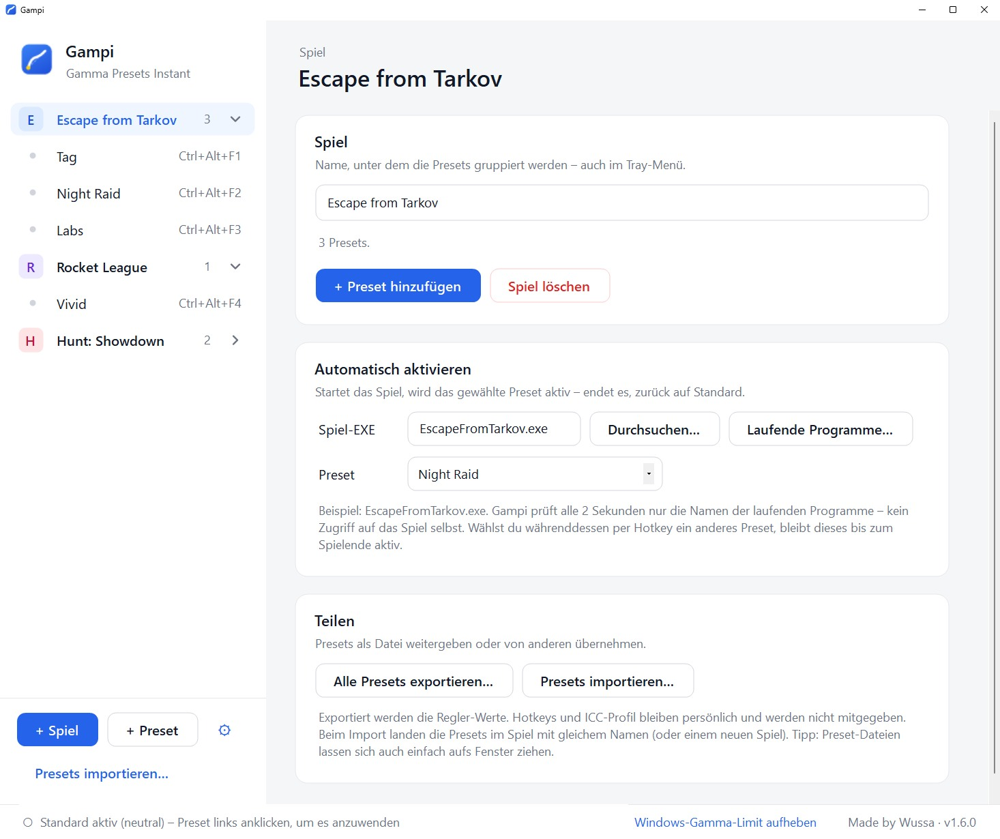
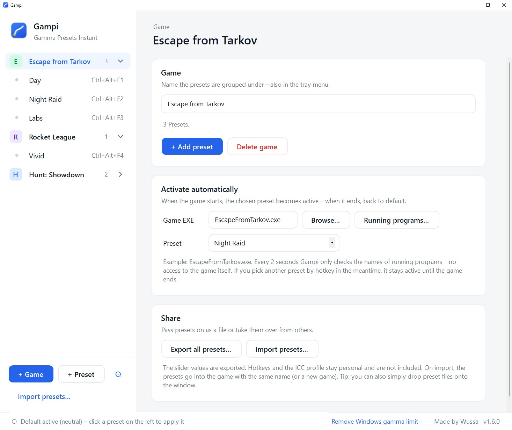
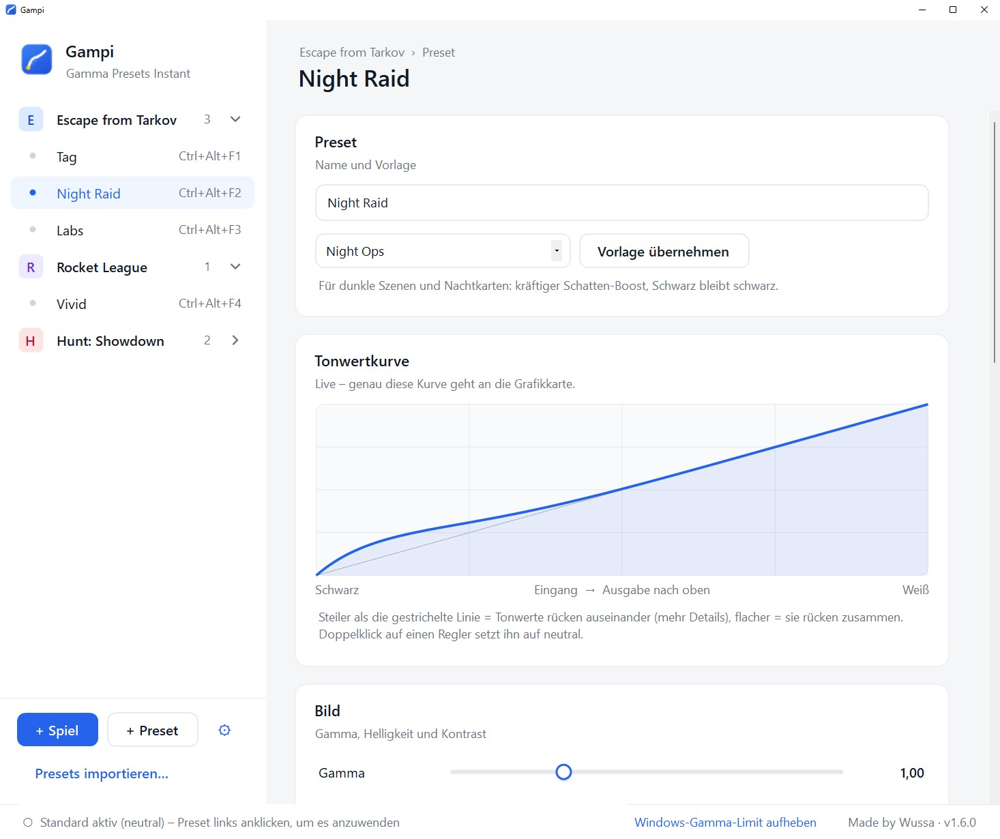
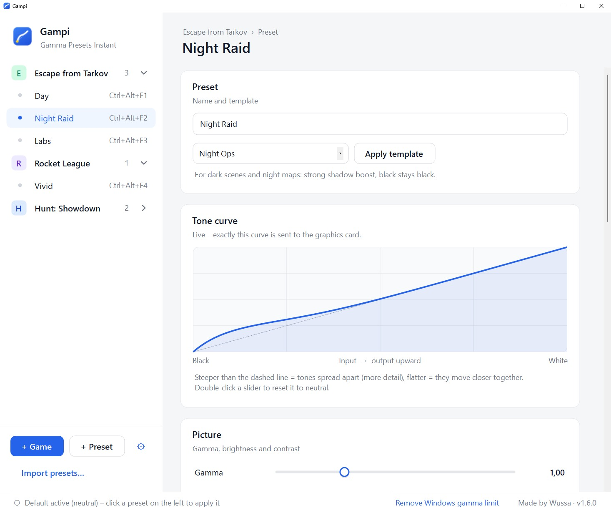
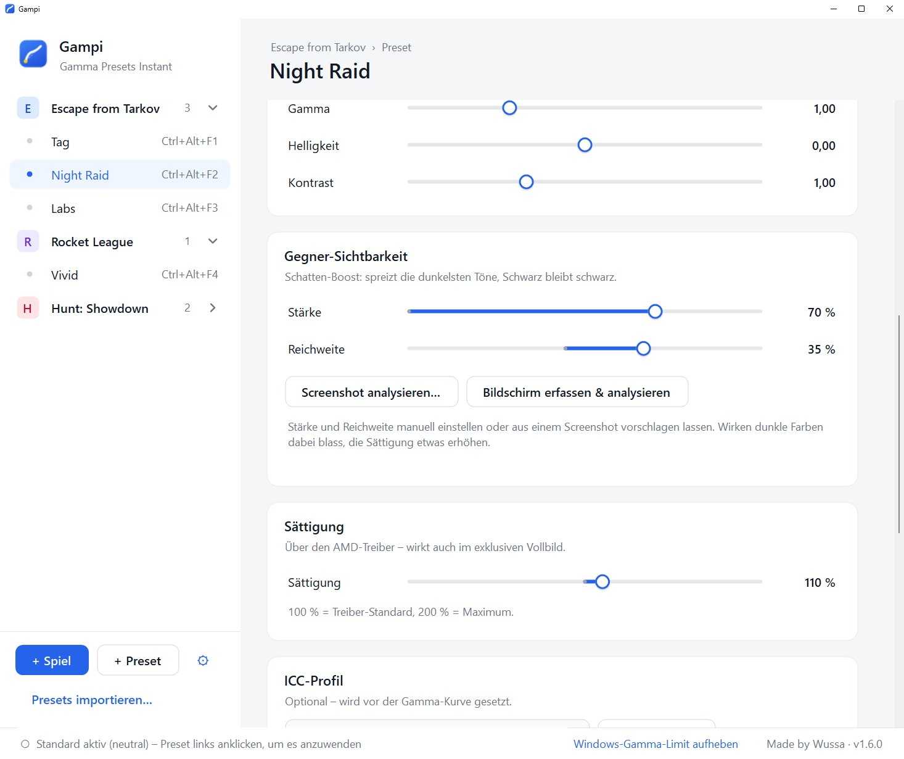
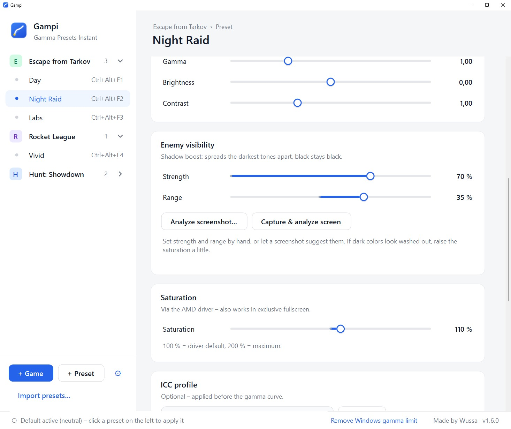

Kein FPS-VerlustNo FPS loss
Die Grafikkarte wendet die Einstellung bei der Ausgabe an. Kein Overlay, keine Latenz.Your GPU applies the setting at display output. No overlay, no latency.
Gampi hellt Schatten gezielt auf und gibt blassen Spielen Farbe – mit einem eigenen Preset pro Spiel, das sich beim Start automatisch einschaltet. Gampi brightens shadows precisely and gives pale games their color back – with a preset for each game that switches on automatically when it starts.
Nicht nur für Spiele: Gampi wirkt auf alles auf deinem Monitor – Filme, Streams, jedes Programm. Not just for games: Gampi works on everything on your monitor – movies, streams, any program.
Viele Spiele sind zu dunkel oder zu blass – und die üblichen Regler machen es oft schlimmer. Das sind die Probleme, und so löst Gampi sie. Many games are too dark or too pale – and the usual sliders often make it worse. Here are the problems, and how Gampi fixes them.
Drehst du die Helligkeit hoch, wird das ganze Bild heller: Schwarz wird grau, der Kontrast geht verloren – und der Gegner hebt sich trotzdem kaum ab.Turn up the brightness and the whole picture gets lighter: black turns grey, contrast is lost – and the enemy still barely stands out.
Gampi hellt nur die dunkelsten Töne auf. Details im Schatten werden sichtbar, Schwarz und helle Bereiche bleiben, wie sie sind.Gampi brightens only the darkest tones. Details in the shadows become visible, while black and bright areas stay as they are.
Viele Spiele haben keinen Regler für Farbe oder Kontrast. Im Treiber steckt die Sättigung in Untermenüs – und gilt dann für alles.Many games have no slider for color or contrast. In the driver, saturation hides in submenus – and then applies to everything.
Sättigung, Kontrast und Gamma stellst du in Gampi ein und speicherst sie zusammen als Preset – nur für dieses Spiel.You set saturation, contrast and gamma in Gampi and save them together as a preset – just for this game.
Treiber- und Monitor-Einstellungen gelten für den ganzen PC. Änderst du sie für ein Spiel, sind Desktop und andere Spiele mit verstellt.Driver and monitor settings apply to the whole PC. Change them for one game and your desktop and other games change too.
Gampi erkennt den Spielstart, schaltet dein Preset ein und danach wieder aus. Mitten im Spiel wechselst du per Hotkey.Gampi detects the game starting, switches your preset on and off again afterwards. Mid-game, you switch by hotkey.
AMD Software bietet Helligkeit und Kontrast, aber kein Gamma – genau das, was dunkle Szenen am besten aufhellt.AMD Software offers brightness and contrast, but no gamma – exactly what brightens dark scenes best.
Gampi stellt Gamma direkt über Windows ein – mit AMD, NVIDIA und Intel.Gampi sets gamma directly through Windows – on AMD, NVIDIA and Intel.
| Helligkeitseinstellung im SpielIn-game brightness setting | Monitor-MenüMonitor menu | AMD- / NVIDIA-TreiberAMD / NVIDIA driver | ReShade & FilterReShade & filters | Gampi | |
|---|---|---|---|---|---|
| Hellt nur die Schatten aufBrightens only the shadows | ✗ | teilspartly | ✗ | ✓ | ✓ |
| Eigene Einstellung pro Spiel, automatischOwn setting per game, automatically | ✓ | ✗ | ✗ | ✓ | ✓ |
| Desktop bleibt normalDesktop stays normal | ✓ | ✗ | ✗ | ✓ | ✓ |
| Wechsel per Hotkey mitten im SpielSwitch by hotkey mid-game | ✗ | ✗ | ✗ | teilspartly | ✓ |
| Kein FPS-Verlust, keine LatenzNo FPS loss, no latency | ✓ | ✓ | ✓ | ✗ | ✓ |
| Gamma auch mit AMD-GrafikkarteGamma on AMD graphics cards too | teilspartly | teilspartly | ✗ | ✓ | ✓ |
| Sättigung, Kontrast und ICC-Profil in einem PresetSaturation, contrast and ICC profile in one preset | ✗ | ✗ | ✗ | ✗ | ✓ |
„teils“ = je nach Spiel oder Monitor. ReShade & Filter: z. B. ReShade oder NVIDIA-Filter. “partly” = depends on game or monitor. ReShade & filters: e.g. ReShade or NVIDIA filters.
Einmal einstellen, danach läuft alles von allein. Änderungen dauern Sekunden. Set it up once and it runs on its own. Changes take seconds.
Die Grafikkarte wendet die Einstellung bei der Ausgabe an. Kein Overlay, keine Latenz.Your GPU applies the setting at display output. No overlay, no latency.
Ein eigenes Farbprofil pro Preset für den letzten Feinschliff.Your own color profile per preset for the final polish.
Screenshots zeigen den Effekt nicht – Vorher/Nachher-Bilder und eine LUT für OBS schon.Screenshots don't show the effect – before/after images and a LUT for OBS do.
Setzen Alt+Tab oder der Monitor das Bild zurück, stellt Gampi dein Preset sofort wieder her.If Alt+Tab or the monitor resets the picture, Gampi restores your preset right away.
Ein Ordner pro Spiel, darin Presets für Tag, Nacht oder einzelne Karten.One folder per game, with presets for day, night or single maps.
Als Datei weitergeben, per Drag & Drop importieren.Pass them on as a file, import by drag & drop.
In drei Schritten eingerichtet – danach schaltet Gampi von selbst um. Set up in three steps – after that, Gampi switches by itself.
Dann einfach spielen – den Rest erledigt Gampi.Then just play – Gampi handles the rest.






Ja. Kein Konto, keine Werbung, keine Datensammlung.Yes. No account, no ads, no data collection.
Nein. Gampi nutzt nur Windows- und Treiberfunktionen: kein Code im Spiel, kein Zugriff auf Spielspeicher, kein Overlay.No. Gampi only uses Windows and driver functions: no code in the game, no access to game memory, no overlay.
Alle. Nur die Sättigung braucht eine AMD- oder NVIDIA-Karte.All of them. Only saturation needs an AMD or NVIDIA card.
Die Grafikkarte wendet ihn erst bei der Ausgabe an den Monitor an – Screenshots entstehen vorher.The GPU applies it only when sending the picture to the monitor – screenshots are taken before that.
Teilweise: Unter HDR ignoriert Windows die Gamma-Kurve, die Sättigung funktioniert weiterhin.Partly: with HDR on, Windows ignores the gamma curve; saturation still works.
Normal bei neuen Programmen: „Weitere Informationen“ → „Trotzdem ausführen“.Normal for new programs: “More info” → “Run anyway”.
Nein. Beim Beenden setzt Gampi alles auf Standard zurück.No. When you quit, Gampi resets everything to default.
Fragen, Fehler, Ideen? Schreib mir. Questions, bugs, ideas? Write to me.